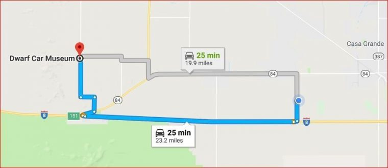
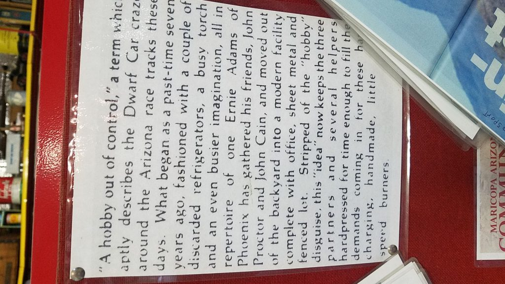
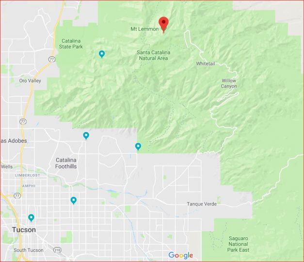
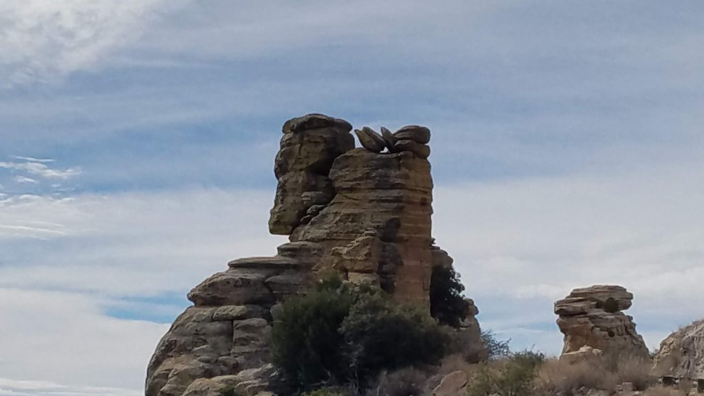

Life is full of change. Back in 2015 we bought a motorhome and in 2016 we decided that we would sell our home in Ohio, quit work, buy a motorhome, and hit the road.
If you’ve followed this blog for any length of time you know that we’ve had a lot of new and wonderful experiences, saw sights that we never imagined we’d visit, and made a lot of fantastic new friends, a lot of which we stay in touch with to this day. We really are so thankful that we had the courage to make the big step back in 2016.
But we’ve decided it’s time to make another change. We’ve not lived in the coach full time since early 2022. And since we are not living in the coach full-time, we’ve decided to buy a smaller travel trailer or 5th wheel that we can leave on our lot in Arizona and just become “Sno-birds” and either drive the car or fly back and forth from Arizona to Ohio.
To that end, we are putting our beautiful 2002 Airstream motorhome up for sale. If you happen to know somebody who might be interested, feel free to send them this link.
We left our new “Lighthouse friends” on Sunday and headed down U.S. 23 a couple hours to Tawas Point State Park where we camped for the next two nights alongside our long-time friends Norm and Alice.
The four of us at Tawas Point
We became good friends back in the mid 70’s when Norm and I began working for Xerox fixing copiers in downtown Detroit. We married our (now still) sweethearts the same year, bought our first homes the same year, and each helped to bring two beautiful babies (a boy and girl each) into this world.
During our time together at Tawas, we ate, we drank, we rode our bikes to the lighthouse and we drove into town for ice cream 🍨 of course!
Don’t we look smashing?Tawas Point lighthouse undergoing repairs
We could’ve easily spent a couple more days with Norm and Alice at Tawas, but we had to continue toward home as we needed to get our house in Ohio ready for the traveling nurse who would be renting from us starting September 1st.
A few months ago when I had written about our upcoming volunteer gig at the lighthouse in Rogers City, I got a message from one of my grade school friends. Kevin told me that they now live on a lake at Oscoda, Michigan. We made plans to meet up for lunch as we would be passing through on our way home.
Kevin and Colleen
Although our visit was brief, it was great to meet up and renew our friendship. We committed to being up in their neck of the woods again and making a point of looking them up for a longer visit next time. Thanks for reaching out to us guys!
We tried to meet up with a couple other schoolmates from the Class of ’72, Tom who was actually camping at Tawas Point the week before we got there and Diane who is now living at Hubbard Lake. Unfortunately, although we messaged each other trying to make it work, it just didn’t work out. Thanks for reaching out to us guys … hope we can try again sometime.
Although we could’ve driven straight through from Oscoda Michigan to Mt Gilead Ohio in one stretch, we decided to boondock at one of our preferred dry camping locations.
Our stop for the night at Cabelas
Cabela’s at Dundee Michigan has HUGE parking lots and the one in the back of the store by the loading docks allows us to park alongside a very large retention pond that makes for a quiet and beautiful rest spot. Although there were a few trucks parked a few hundred feet away, they never kept us from a restful night.
Since we only had about ten days to get the house ready for Tara (the traveling health professional) and we needed to pack the coach for our upcoming trip to Arizona, we were going to park it at David and Lisa’s house. Turned out however they were having a big garage sale this weekend. So instead we were lucky enough to snag a site at Mt Gilead State Park, for the weekend. It’s a great little heavily shaded campground with both paved full hook-up sites and gravel electric only sites.
The next few days kept us busy between me going back to work M-W-Fridays, moving our personal items out of the house and into storage in preparation for our renter, and moving other “stuff” from the house to the coach in preparation for our 6 month stay at Rovers Roost in Arizona. The final day Kathy kept busy dusting, vacuuming, and mopping while I got a badly needed haircut, took a bunch of broken-down cardboard boxes to the recycling center, and dropped off a few things at the local Goodwill store.
After the garage sale we moved our home on wheels up to David and Lisa’s just outside of town (Mt Gilead) where up on the hill it’s always breezy and there’s a nice oak tree right outside our windshield that shades the morning sun from heating the coach too early in the day.
There’s always a little anxiety about change and moving down the road. But we make a plan and start working through it. So far things are working out nicely.
Thanks to David and Lisa’s hospitality, we’ll be here for a few weeks before heading to Arizona for the winter. We’re looking forward to a relaxing, enjoyable (and uneventful) trip west. Stayed tuned for more.
This is the second time we’ve replaced our motorhome windshield. The first was right after we bought it in 2016.
We had developed a stress crack in the upper right corner of the driver’s windshield the first time. But this time while we developed another stress crack (in the same location), we also had two large long cracks that had started as a result of rocks hitting the windshield.
One of the long cracks starting at the lower right
When I first noticed one of the long cracks we were on our way from Missouri to South Dakota. It seemed to be getting longer, but I couldn’t be sure so I put a small piece of scotch tape at the end of the crack on the inside so I could monitor how fast it might be moving. And it was moving right along! You can see the tape in the picture above.
This crack started up at the top right corner
We put in a claim with our insurance company and they promptly ordered the correct glass from a company called Custom Glass Solutions in Ohio and placed the install order with Chris at Arizona RV Glass in Phoenix. When the glass arrived at Chris’ shop in Phoenix, I got the call to schedule installation.
This video shows the entire removal and install process from start to finish
Chris explained to me that stress cracks like the one we had in the upper right corner are pretty common. This is caused by too much flexing of the coach chassis. The flexing can be caused when trying to level the coach on an uneven site or when entering/exiting a fuel stop and driving diagonally across the bump at the curb … This causes the chassis to twist and as a result put too much strain on the windshield corners. He suggests to always try to turn in head on if possible.
We’ll try to be more careful from now on, but often it’s just not possible to miss all the potholes and bumps you come across on the open road.
In many older motorhomes like ours the windshield curves around the corners as compared with many of the newer motorhomes I’ve noticed the windshield seems to be more “flat” all across. I think maybe this curve around may be contributing to the problem.
I just hope this doesn’t happen too often … even with comprehensive coverage on our auto insurance policy, this can get pretty expensive over time between deductibles and premium increases. I called around before placing the claim and if I were to buy the windshield outright and pay for installation ourselves prices ranged from a low of $1700 to a high of $2300!
On another subject, we’re heading to Yuma tomorrow so that we can easily walk across the border into Los Algodones. My plan is to spend some time visiting the eye doctor and getting new eyeglasses along with picking up some prescription drugs at one of the pharmacies. We will also enjoy visiting our friends Paul and Chris who are spending the winter at the Escapees KOFA RV Park in Yuma. Our friends Jim and LuAnn left us here at the Roost this morning and we will meet up with them at KOFA as well. Looking forward to the six of us having a good time!
Until next time, take care of each other (and yourself) and we wish you well.
Tuesday morning we left the Shiawassee County Fairgrounds and heading to the Ludington Michigan area. We pulled in to our Harvest Hosts location just north of U.S. 10 and about 15 miles east of the Lake Michigan shore at Ludington. We’d been in this area of Michigan many times over the past 50 years or so … starting with trips with the family as we were kids growing up, then spending our honeymoon in northern Michigan and most recently volunteering at Pere Marquette Oaks RV Park during the summers of 2017 and 2018. So this in some ways is “Old Home Week”.
As a member of Harvest Hosts, we are able to stay in driveways and parking areas of wineries, distilleries, museums, galleries, and other small businesses who invite RV’ers to park on their property overnight. It is suggested (although not mandatory) that the traveler returns the favor by purchasing something from the host.
We pulled in to Craig’s place, tucked into the tall pines of northern Michigan. His gallery, just across the driveway from the house, is filled with all sorts of hand made woodcraft. Loads of small handcrafted smoking pipes, kitchen spoons and spatulas, and cutting boards along with much larger artwork. We bought a really nice mitten-shaped (Michigan) maple cutting board. We admired other pieces but living in a motorhome, we just don’t have the luxury of square footage for larger items.
Once we parked the rig at Craig’s place, we unhooked and drove the car about 15 miles south to PM Oaks at Baldwin. There we were to meet Kathy’s cousin and her husband who we hadn’t seen in about twenty years or so. They used to live in southeast Michigan (where we were from) but have lived in Traverse City for nearly a quarter century now.
We met at PMO as they have a nice shelter/pavilion along with an air conditioned clubhouse we could sit and visit at without feeling as though we were being rushed to leave like might happen if we met somewhere in a restaurant.
By now it was getting to be late afternoon, so we decided we would leave PMO and meet down the road for an early dinner. After that they would move on home to Traverse City and we would head on back to Craig’s place for the night Well ……..
That all SEEMED like a good plan but, … as I turned the key on the car … crank crank crank … but no start. We sent Sue and Loren on home as we had friends there at PMO who could lend us jumper cables, a ride back to our rig, and more.
We had the car towed to a shop down the street for repair, had dinner at Chuck & JoAnne’s (our friends at PMO) and then finally settled in for the night. The shop said they’d get the car in about 11a.m. on Wednesday and I reminded them that I needed to know ASAP on Wednesday if we’d get it back that day because we had an already paid reservation on the SS Badger to cross Lake Michigan on Thursday. If it was not to be that we’d be fixed in time for the trip, I needed to cancel in hopes that we’d get at least some of our money back.
Wednesday morning I connected with a fellow high school graduate of ours (Class of ’72) who, as it turned out had in the past couple of years purchased a former lakeside resort (3 cabins) on Lake Cecilia just down the road from PMO. We had connected on Facebook months earlier and made plans to get reacquainted (we hadn’t seen each other or even talked since 1972) on this trip. Because our car was in the shop, Rich drove on over to PMO and picked us up. We spent all morning and into the afternoon having a wonderful visit with Rich and his wife Diane at their beautiful cabin(s) by the lake. They’ve done a wonderful job remodeling/restoring while keeping the 1940’s vintage lakeside cabin theme. We envy their drive and their creativity – they’ve got a charming place.
I’m just angry with myself that I didn’t get any pictures of Rich and Diane or their lakeside getaway.
Afternoon found us back at PMO enjoying an early dinner with our friends Chuck and Joanne along with Mike and Deb. It was great to have the opportunity to reconnect with all four of them again. During our meal the shop called to say the car was fixed and we could pick it up anytime.
Turned out that the A/C compressor had seized up and trying to crank the starter over and over to get the car started then burned out the starter. So a new starter and a/c compressor was needed.
We also found out that an RV site right behind Chuck and JoAnne’s would be available for us tonight so Chuck chauffeured me up to get the coach and bring it back down to PMO where we could plug in for the night. Then Chuck drove me up to the shop to get the car. After supper Kathy and I took advantage of the opportunity to get in the pool and just unwind and relax for a couple hours. All the stress of the last day or two just melted away knowing the car was fixed, we were parked in a spot where we could have a/c and we would easily make it to the ferry the next morning.
Again, I’m so sorry I never took any pictures of our friends at PMO or our time together.
The story of the Badger
At the loading bay door
Walking along the deck
At the bow of the boat
Looking down from the deck as we back into the ramp to unload at Manitowoc
Once unloaded at Manitowoc, we moved up just a few miles, parked our rig at the Elks Lodge for the night, and drove the car up to Green Bay where we met our good friends Forrest and Mary for lunch at Mackinaws Grill.
My Wet Burrito
Kathy’s Strawberry Spinach (w/ Shrimp) Salad
We had a nice, although brief visit. We caught each other up on where our travels had taken us over the last few months. Forrest and Mary have an RV lot just 4 spaces away from us at Rover’s Roost in Casa Grande AZ and they had come to visit us this past June while we were camp hosting at Dale Hollow Lake State Park in Kentucky. It was great to reconnect with them. Once again, I neglected to get a picture of Forrest and Mary too!
We went back to the Elks Lodge late afternoon, ran down the street to pick up some necessities at the local Walmart and then came back and enjoyed making new friends in the lodge. They welcomed us with open arms. We had a nice visit along with a couple drinks but it had been a busy day so we excused ourselves early, said our goodbyes and thank you’s and retired early to our home on wheels.
The next day found us driving 350 miles from Manitowoc Wisconsin to Mason City Iowa where we met up with Paul and Chris who we had first met when we were Workamping at Rainbow’s End RV Park in Livingston Texas. They had just (last week) finished up the sale of the family farm in Maynard Iowa, then they visited the Winnebago factory in Forest City Iowa to get a few small things taken care of on their (new to them) 2012 Winnebago Meridian 40′ motorhome.
Paul promised us that we would enjoy the best steam of our lives that night and they were right! My filet was “Melt In Your Mouth” good
Herb, Kathy, Chris & Paul
Parked next to Paul & Chris
The Northwestern Steak House
Take look at the menu
90 minutes max in the booth
My 9 oz medium rare filet
Our stay in Mason City Iowa
Since Paul grew up in Mason City, he knew what to see and do for the short time we had available to us. We visited the Surf Ballroom in Clear Lake where Buddy Holly, Ritchie Valens and others had performed at on February 2, 1959 before taking a flight to their tragic deaths in a nearby cornfield.
Click on any of the thumbnails above to see full-size pictures
Here are some pix of the walls (and ceiling) of the “green room” where the performers prepared to go on stage. See how many signatures of the hundreds that are on these walls that you might recognize!
Click on any thumbnail above to see larger images
That’s all for this installment. The next leg of our trip will find us driving 335 miles from Mason City Iowa to Lee’s Summit Missouri. We meet up with friends Ron and Judy for time together along with the four of us visiting our friend Carl and touring his mausoleum.
I’ll fill you all in on that in the next few days.
In the meantime, take care of each other and stay healthy … we wish you well.
We are closing in on finishing up our 3rd year of living the full-time RV lifestyle.
The road has been a good one to us. Not that it’s been all fun, frolic, and laughs but it has brought us closer together – not only physically but emotionally as well.
Kathy and I just celebrated our 45th wedding anniversary with an Amtrak trip to Glacier National Park. During our lifetime together, a lot of that time was “alone” time. In one of my early career positions I was gone “on the road” nearly every weekday, sleeping in motels Sunday through Thursday nights somewhere in my multi-state territory.
Even when I was at home, my time was consumed with working on the “work” business from home involved in conference calls and drafting of sales proposal letters along with being active in the only real hobby I ever had … local ham radio clubs and events.
Me in my ham radio “shack” in the early ’80’s
Kathy had a handful of different jobs over the years (most importantly raising the kids and keeping the house together) with most of the time working in the school system so she could be off work and at home when the kids were at home. We were fortunate because with her job schedule we didn’t need to hire child care.
But now our lives are a polar opposite of that earlier time. We are together ALL THE TIME. We travel side by side, we share meals, we do the mundane tasks of grocery shopping, house cleaning and laundry together, and we sleep next to each other. I think we have both come to appreciate each other far more than earlier in our marriage. We’ve always had a lot of mutual love and respect for each other – rarely raising our voices to the other. But before … we had other things to occupy our time. If we felt the urge for some “space”, we could easily separate ourselves from the other. Now on the other hand – it’s not so easy. After all, we live in a 300 sf box with a little bit of green space around us.
Our three years together in our “Green Machine” Airstream motorhome has given us the luxury at this stage in our lives of … in a way … becoming one.
45 years and still “Livin’ & Lovin'”
When we started this lifestyle three years ago, we realized that in order to travel from place to place and enjoy the local life, we needed to have some assistance with the household budget. We sold our house, paid off what little remaining debt we had and decided we would live off our social security income and a small pension Kathy had from working at the school system. We decided we would keep the retirement nest egg (IRA’s, investments) alone for future use when (if) we get off the road. Oh sure, it’ll happen sometime. We will either run out of good health or run out of our love for the road, but by leaving our investments alone so they can continue to grow, at least we won’t HAVE to come off the road because we’ve run out of money.
Although I had no employer monthly pension income (I was self employed the last 20 years) we had purchased an annuity years ago that could now provide a supplement to our Social Security along with Kathy’s small pension.
Yes we could “make it” on those income sources alone, it was going to be tight. We’d have to always be scrutinizing the budget each month and we’d have little room if any for any emergency expense or extravagance.
Somewhere, somehow … we discovered Workamping/Hosting/Volunteering and the opportunities it can provide. These experiences have given us the opportunity to travel and have rent-free sites and utilities. In addition, these opportunities have given us something else that we never really expected … new and lasting friendships.
Workamping/Camp Hosting/Volunteering opportunities are generally long-term commitments. What I mean by that is that most often (but not always) your “employer” would like to have their “staff” on board for the season or even year-round.
Starting out, our first gig was 6 months long – the winter season in Arizona.
Although our owner/managers (George & Sigrid) were wonderful to us, treated us so well – like family … we ultimately decided when making arrangements for future opportunities we would look for more “short term” commitments. We’ve since been working one-month to 3-month gigs.
This way we can continue to travel around the country and have more new experiences and make more new and lasting friendships. If we worked for 6 months in each location, we’d be 130 years old and still not have completed our Bucket List!
Here’s a U.S. map showing where we’ve AT LEAST stayed overnight in the last three years. You can see we’ve still got a long way to go … we need to spend more time along both the east and west coasts.
Oh yeah, earlier I mentioned this part about friendships but then I got off track – excuse me. We have discovered that working (volunteering) as we travel allows us to meet, get to know, and build lasting relationships with lots of wonderful people from all over the country.
There are 10 couples here, all living in our rigs side-by-side in Volunteer Village at the Spearfish City Campground right across the street from the hatchery.
We work side-by-side, share most nights of the week around the campfire cooking smores and enjoying each other’s stories and even have monthly pot luck meals along with weekly free music festivals in the city park just a few hundred feet away.
One of our pot luck meals at Volunteer VillageBrooksie entertaining us with one of her stories while Matt prepares his SmoreEnjoying one of the weekly free “Canyon Accoustics” concertsSometimes it’s a smaller group out to share a meal together
When we have to say goodbye and hit the road again, we stay in touch with our new friends as we travel using both Facebook (groups) and a Facebook-like app made just for RV’ers called RVillage.com. Both of these are great resources to keep up with our buddies and see what their next adventure is and maybe where we might apply to work/volunteer in the future.
We’ve already had at least a dozen experiences over the last three years where we have volunteered with folks in say, Livingston Texas and met up with them again in Burlington Vermont or Ludington Michigan (or somewhere like that). Sometimes it’s planned, but more often it’s serendipitous!
But what about our family and “old” friends? Do we miss our kids and grandchildren? You bet! It would be great if we could do what we are doing AND fly back home to Ohio at least once or twice a year to spend time with the family. But, fact is we just can’t afford to that. Life is often about sacrifices (and opportunities!)
It really depends on where we are working and how long the commitment is and where the next commitment will be. We don’t plan our work locations based on traveling back home once or twice each year. We plan our work locations on where we have NOT been, what we might like to see, and how appealing the location and job description/compensation package is.
We were last in Ohio April of 2018 for a month and we will be back there summer of 2020 so we’ll have plenty of time to catch up. The photos below of the kids, grand-kids, in-laws and old neighbors might be a couple or a few years old, but they’re some of our favorites.
And of course, we post LOTS of info and pictures on Facebook, videos on You Tube and posts here on the blog for family and friends to see what we’re up to.
So yes, it’s great to travel the country and see all the great exciting new places, but we’ve found that the wonderful personal relationships we’ve developed with all our new friends as we travel and volunteer are the larger perk of the RV lifestyle that we embrace.
If you are interested in finding out more about our Workamping and volunteering experiences, just scroll on up to the top right hand side of this post and enter either “volunteer” or “workamp” in the search box and hit “enter”.
If you’re not already subscribed to this blog, you can easily do so by scrolling up to the top of any page and entering your email address in the block on the right side.
You can also subscribe to our YouTube channel (herbnkathyrv) on You Tube.
If you’re curious (at any time) to know where we are at that moment then click the button at the top right of this page labeled “See Where We Are Now“.
We’d love to hear from you. If you scroll all the way down to the bottom of this page, you can send us a note. Again, thanks for riding along. ’til next time – safe travels.
Fort Peck – It’s a small town (about 250 residents) and it’s an Army Corp of Engineers “Project” that includes a dam, a campground, an Interpretive Center, and multiple fishing/boating/hunting recreation areas.
Oh, and I almost forgot … the reason all of the above is here … the Fort Peck Reservoir. The reservoir (man made lake) was formed from the Missouri River, is 135 miles long and has over 1500 miles of shoreline. It was formed in the 30’s when 10,000+ men built the world’s largest earthen dam to provide flood control for lands downstream.
For now, we want to share with you a little about why we are here, how we came to find this job in particular, and take you on a tour of the park and show you some of our duties here.
Kathy and I are volunteers … well, kind of. We travel the country volunteering our time at campgrounds and RV parks in exchange for the rent and utilities on our site. We generally provide the park 12-15 hours a week and they give us a full hook-up (elec, water, sewer) site along with utilities. Sometimes we also receive; laundry money, free WiFi and cable TV hook-up, and discounts on purchases from the camp store or nearby attractions.
This arrangement offers us an opportunity to travel and see the country, meet all kinds of wonderful new people and experience new situations in all kinds of environments that we otherwise would not be able to see and do on our limited budget.
It offers the campground owner/operator free part-time employees for no cash outlay, only the loss of rental income for a couple RV sites that might often be vacant anyway. Another benefit: typically there is no employment contract or agreement to sign – only a handshake agreement. It’s called bartering. And it works well for us and the campground owner.
How we came to show up here ..
We knew that part of our “Bucket List” included a lot of the national parks and monuments out west, so we decided we’d search for jobs in that area.
Although we subscribe, either for a small annual fee or sometimes for free, to many of the Workamping web sites and have our resume’ published on a lot of them, there is also another great source for finding government related jobs and volunteer positions. I logged on to Volunteer.gov and followed the easy instructions to search for Campground Host (volunteer) positions available in Idaho, Montana, Wyoming, Utah, and Colorado. I filled out the online application and with just a few mouse clicks submitted our app to probably 40 or so parks in that five state area.
Within a week or two we started getting emails and phone calls from campground managers and rangers throughout the 5 state area. We chose to come to Fort Peck because we were already committed to South Dakota for July, August, and September and Ranger Scott here at Fort Peck was willing to work with our schedule. We left our leased RV lot in Casa Grande Arizona on April 1st and showed up at Fort Peck on April 15 just after the snow melted.
It’s been fascinating to learn about the local history. The town of Fort Peck was built by the corp to support the nearly 50,000 people that would come here to work on the building of the dam over the 10+ year period of 1930 to 1941. There were as many as 11,000 men working on the dam at any one time during that period and eight men lost their lives during “the Big Slide” of 1938 and are permanently entombed in the dam to this day.
To learn more about the dam building and how the town and local area and people from far and wide prospered during the depression, I encourage you to follow this link to visit the PBS web site with some great pictures from the era and a video about the building of the dam.
Our Camp Host Site on day one – April 15th The theatre operated 24/7 during construction of the dam with newsreels, movies and live plays to entertain the workers and their families and still offers summer plays to locals and visitors to the area.The Northeast Montana Veterans Memorial Park in the center of townThe world’s largest earthen dam, 4 miles long, 3/4 mile wide at the base, and 250′ tall. The Spillway located 3 miles east of the dam. Yes, that’s ice on the downstream sideThe Interpretive Center contains displays information on the dam, local paleontology, and local fish and wildlife along with an educational movie theatre
There was a T-Rex discovered here (now on display at the Smithsonian) with a full-size replica here in the Interpretive Center.
The Fort Peck T-Rex in the Interpretive Center
Here’s a video that gives a tour of the campground and some of the surrounding area along with a little bit of what we’ve been doing at the park these first couple of weeks.
10 minute video on the Downstream Campground – Fort Peck Montana
Thanks for riding along and visiting. We’re having fun and intend to keep posting to share a little of our time here. Please leave any comments below and be sure to subscribe to our You Tube channel so you always get the latest videos as soon as they are published. I usually try to make the videos available here via the blog as well.
Until next time, best wishes to you and yours from HerbnKathy
Once or twice each month we (folks here at Rover’s Roost RV Park) have what we call a “Tag Along”. We just hop in our car (or someone else’s) and head out on a road trip.
This month about 10 or 12 of us went up to the Dwarf Car Museum just southwest of Maricopa, about 30 minutes west of our park.

Quick trip out I-8 to the museum
A lot of us really didn’t know what to expect .. and boy were we impressed!
Ernie and his helpers have, over the years built from scratch little 5/8 scale automobiles. These are real beauties as the pictures below illustrate. But what is really fascinating is that they are all made from flat sheet stock! They make their own roofs, fenders, door panels along with all the stainless (looks like chrome) grills, trim, headlight rings, window frames …. and more.
They will take a stock steering wheel from a junkyard and cut it down (taking sections of the diameter out) so that it becomes a smaller version of itself. On the dashboard, even though the actual dash is scratch made from sheet steel and stainless … what about the gauges? They use stock gauges but cut out part of the dial (or scale) to make it smaller and then hand paint the markings back on the face plate before cutting down the glass and reinstalling. Painstaking work.
The museum is really more of a shop – Out in the middle of nowhere

How it came to be …
Click on any of the images below to see a larger view
’54 Chevy
This ’60’s era Chevy is ALL from sheet metal – all hand formed and welded!
They use Toyota engines and drive trains
They roll the bumpers, grill, light rings, hub caps, tail pipes, body trim all out of stainless
Ernie and his buddies were there the day we visited – there were probably about 35 or 40 of us altogether. I asked one of them what their day is like. He said “we start work at the shop about 7am but then slow down (or quit altogether) when the visitors start to come in.” “Then we start up again late afternoon and work until 8 or 9 at night.” When asked how many hours it takes to make one of these beauties he answered “about 3000” or so.
I commented on how dedicated they are to spend those kinds of hours each day toward achieving the finished product. One of them piped up and said “but only for 6 months – then I go home to Minnesota”. My reaction was one of relief and I commented “that’s good that you get a vacation from this” and he replied “yeah, I go back home to my shop in Minnesota and work on my projects there.”
There is no fee to visit the “museum” but they do accept donations. There is an endless loop video playing in a little theater that shows how these cars are made from the ground up. Seeing this video really gave me an appreciation for all the talent, imagination, and effort that goes into producing these masterpieces. These guys are truly artisans.
If you find yourself in the Phoenix or Tucson take a drive to the Dwarf Car Museum at Maricopa. You’ll be amazed at what you’ll see and even more so when you talk with the fellas that make these little wonders.
We just returned to our winter home at Rover’s Roost SKP RV Park in Casa Grande, AZ after spending a “mostly” wonderful 10 days or so at Quartzsite.
What’s Quartzsite you ask? Quartzsite is a small town in the western Arizona desert, only about 15 miles or so from Blythe, California. Quartzsite (during the summer) is a sleepy little town of about 3000 people. But WATCH OUT! Because when winter arrives, the town and surrounding desert lands explode with RV’ers and Van Campers and all sorts of folks from all over the country.
The red balloon is Quartzsite. The blue balloons are places on our bucket list
The population in the winter goes from about 3000 up to 300,000 or more as folks show up to attend one or more of the many shows that take place. You have the Big Tent RV Show, Gem show, Rock Show, Jewelry Show, and on-going Flea Market(s) over the winter months.
The show officially started on Saturday January 19th although we arrived early on Tuesday the 15th to an area in the desert about 6 miles north of Quartzsite known as “Boomerville”. Boomerville is an unofficial area off the north side of Plamosa Road where about 500-600 Escapee (baby boomers) meet each year at Q to renew old friendships.
It was a crappy cold and rainy day and our good friends Paul and Chris arrived from Yuma with a flat tire on their motorhome.
Replacing the tire in the rain and mud of the desert
Thankfully, Paul & Chris had subscribed to the Escapee Roadside Assistance program and the repairman (with a trailer full of tools) was out to the site within about an hour or so.
While the repairmen were working on replacing the tire, the rest of us gathered in Walter & Rebecca’s rig. We had all met for the first time in Livingston, TX back in December of 2017 and it was great to spend time together again.
Waiting for the tire repair in the warm comfort of Walter & Rebecca’s rig
The following morning we (the 5 couples working together in the club booth) moved on down the road to the site of the “Big Tent” where we would be working over the next 10 days or so.
In line waiting to get escorted to our parking spot at the Big TentWe got a prime spot right in front of the Big Tent (that’s our green rig in the middle)
The parking area filled up quickly with vendor’s rigs. There were nearly 500 vendor booths inside the tent along with dozens more outside selling everything from new and used RV’s to generators, cell phones, satellite TV systems, RV park spaces, accessories, personal health and beauty aids, leather goods, jewelry, and TONS more.
Here’s a shot of one of the 3 rows inside the tent before most of the vendors arrivedA shot of one of the vendor rows outside the tent during a weekday, the weekends were busier(L to R) Lisa, Rob, Jim, and Dennis setting up the booth ready for the crowdsJim and Chris (background) talking with a prospective member along with Paul and Lisa (foreground) signing up a couple of new membersHere’s a quick look video inside the Big Tent
We were fortunate to have 5 couples working the booth and we all had a great time getting to know one another. We had at least 3 pot luck dinners.
Robyn and Larry live in New Mexico and will be retiring and transitioning to full time RV life in May while Dennis and Connie from the Cincinnati area along with Rob and Laura from Indianapolis and Kathy and me (from Ohio) are full timers. Paul and Chris still live on the family farm in Iowa during the summers and travel extensively during the winters. Our fearless leaders Jim and Lisa are both retired but working again for the club as leaders of the RV Show Teams and of the club Head Out Programs (Caravans/Cruises/Bus Tours). Believe me, with their hectic schedule, they are FAR from being retired!
Our crew at the booth near the end of the show. Unfortunately, Lisa didn’t make it into the picture this day
Click on any of the images in the gallery below to see a larger view
A LOAF of French Fries!
Motorcycle Lifts for your pickup truck
An “Artsy” vendor
CUTE & Effective
Selling Diesel upgrades
Pork Butt, Ribs, and Brisket on the smoker
As we’ve said before … traveling the country and seeing all the beautiful landscape is rewarding enough, but the big reward is meeting all the new folks and developing such great new friendships. We so look forward to our next opportunity to meet up on down the road.
We worked the booth selling new memberships, we walked the tent looking at all the many vendors had to offer, we spent too much money buying “stuff” (which we can talk about later), and we had a great time over numerous dinners laughing and sharing stories.
All in all, it was a GREAT trip and a wonderful experience. Only the first day was a bummer due to the bad weather and Paul & Chris’ flat tire.
If you’re an Escapee RV Club member and you’d like to work one of the RV shows across the country, reach out to Lisa (you know who she is). If you’re an RV’er and you’re NOT an Escapee … come on along and join us! Here’s the link – it’s a great RV club … and so much more. It’ll be the best $39.95 you’ve spent in a LONG time! (psss – tell ’em Herb n Kathy sent you)
Thanks for following along on the ride .. more to come about our other adventures later and we look forward to meeting up with you somewhere along the way!
The Saguaro Cactus (pronounced Sawarro) is the largest of the cactus family and can live to be 150-200 years old. These are found in The Sonoran Desert of Arizona and Mexico and occasionally in southern California.
These cactus have one tap root that only goes down about 2 feet or so and other roots that spread out just below the surface and spread out as far as the plant is tall. Although a 10 year old plant might only be about 1″-2″ tall, they can grow to be 40-60 feet tall and sprout their first “arm” at about 150 years old.
The Saguaro get most of their moisture during the summer rainy season and can end up weighing between 3000-5000 pounds. Arizona has strict regulations about harvesting or collecting Saguaro.
Once a Saguaro dies, the woody ribs can be used to build furniture, roofs, or fences.
A healthy Saguaro about 40′ tall in the National Forest
We hopped in the car and took a day trip down from our winter home at Rover’s Roost RV Park to visit the Arizona-Sonoran Desert Museum, the Saguaro National Forest and maybe the International Wildlife Museum.
The blue dot just to the left of Casa Grande shows our home and the red balloon about an hour southeast is the Saguaro National Forest where we spent most of the day
We headed down I-10 and entered the Saguaro National Forest from the north. Although the visitor center was closed due to the federal government shutdown, the park/forest was open and we could wander all we wanted.
As usual, you can click on any of the thumbnails below to see an enlarged view and then you can scroll right or left to see the next picture.
There’s so much to see … even though we’re not hikers. And there’s many other types of cactus growing in this region besides the Saguaro. Some of it is even flowering now in the midst of winter when generally this happens in the spring.
We then drove on down the road a bit to the Arizona-Sonoran Desert Museum. But as it turned out, the entrance fee was $25 each and we were already half way through the day. We decided that for that price we had better come back another day to be able to take advantage of all the museum has to offer. We’ve heard lots of great comments from friends who have been there and want to be able to get our money’s worth.
Lunch is always a highlight of my day and this one was no exception. At the south end of the park trail is a nice little cafe called “Coyote Pause Cafe”.
After a late lunch we moved on down the road a little further to the International Wildlife Museum on Gates Pass Road. Although this museum costs only $7 each to get in, it was getting into mid-afternoon and we wanted to hit the road (I-10) before the Tucson rush hour traffic.
We’ll come back another day here too. But at least now we know what we want to see and where it is.
Thanks for coming along and be sure to sign up to get our future blog posts automatically by entering your email address in the little box on the left side where it says “Sign Up To Follow Our Blog”.
You can check out all our RV full-time travel videos at herbnkathyrv on You Tube and click SUBSCRIBE down in the lower right corner of any of our videos.
We met Rob & Michelle when we were working up in Michigan last summer at Pere Marquette Oaks RV Park. They were pretty new to the full-time RV lifestyle themselves having retired from work, selling their home and buying the truck and the 5th wheel to live in as they traveled the country.
We were glad to find that Rob & Michelle had made their way from Michigan to Arizona and were staying at an RV park near Tucson for the month of December.
We reached out to them through Facebook and then spent the day together driving up to Mt. Lemmon (about 9000′). It was a beautiful day with temps down in Tucson at about 70+ degrees and the sun was shining brightly. We knew the temperature up on the mountain would be 20-30 degrees cooler.
Mt. Lemmon has a summit at 9159′ and is located in the Santa Catalina Mountain Range of the Coronado National Forest. The Catalina Highway is a two lane paved road that heads north from Tucson and winds it’s way on up to Mt. Lemmon Ski Valley and the little town of Summerhaven that sports a couple restaurants, a general store, and a few other small businesses.

The white squiggly line you see going up from Tanque Verde is the Catalina Highway that takes you to the summit
Summerhaven, although home to a few full-time residents, is mostly inhabited by folks who come up from the hot desert climate to escape from the heat of the summers.
One of the restaurants in Summerhaven on Mt. Lemmon
We stopped at most every wide spot in the road to be able to get out and marvel at the sites as we looked at the oddly shaped rock formations and the view of the expanse of Tucson down below.

Remember, you can click on any of the thumbnails below to see an enlarged view and then you can scroll right or left to see the next picture.
One of the really cool things we found before heading out on our trip was an app called “Mt. Lemon Science Tour“. This app can be downloaded from your device app store (free) and it is an approximately 1 hour narrated tour of the ride to the top. It tells you when to pull over, pause the app and goes on to explain what you’re looking at! It’s a really great idea … but we ended up having too much fun talking about what we’ve all been up to since the last time we were together. Kathy and I decided we’ll go back up sometime and use the app to learn more about what we’re seeing.
As we pulled over at one of the larger roadside parking areas we noticed about a half dozen U.S. Border Patrol vehicles. It seemed odd that they would be chasing after some bad guys all the way up here.
The parking area with Border Patrol vehicles
But as we moved closer to the overlook at the wall we could then see what all the activity was about. They were practicing their rescue techniques having installed hardware to perform a repelling operation. They actually had one of their members in a basket and were preparing to lower him over the edge into about a 100 foot drop to safety. We stayed and watched a while before we moved on.
This first video shows them getting ready to drop him over the edge – head first!
Part 2 video of the repelling operation – he’s about halfway down the cliff
All in all, it was another beautiful day in paradise and it was especially great that we were able to share it with two of our full-time RV buddies Rob and Michelle.
We look forward to maybe hooking up with Rob & Michelle (and many others) when we’re at the Big Tent RV Show in Quartzite the last week of January.
Thanks for coming along and be sure to sign up to get our future blog posts automatically by entering your email address in the little box on the left side where it says “Sign Up To Follow Our Blog”.
You can check out all our RV full-time travel videos at herbnkathyrv on You Tube and click SUBSCRIBE down in the lower right corner of any of our videos.